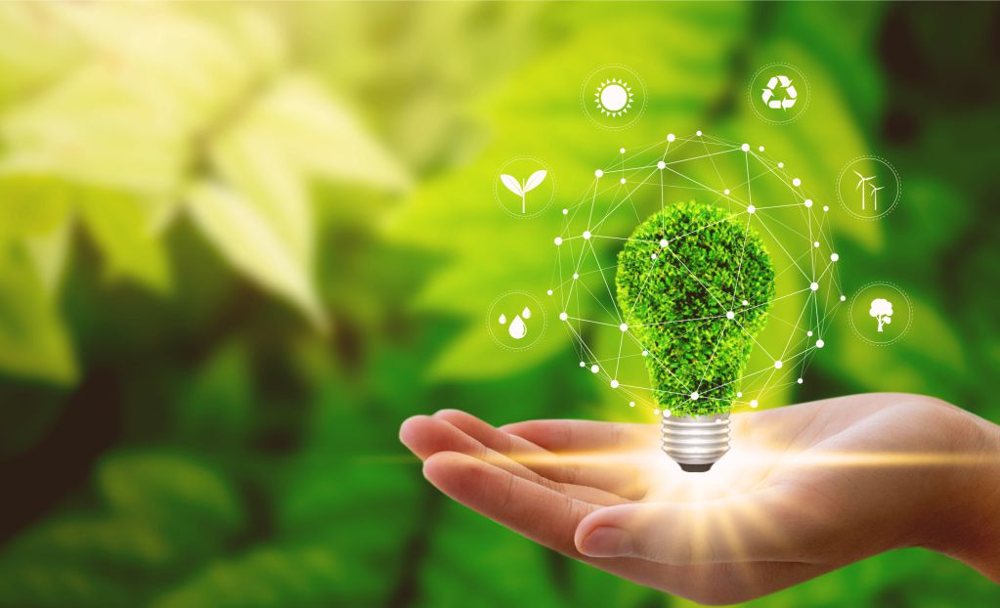
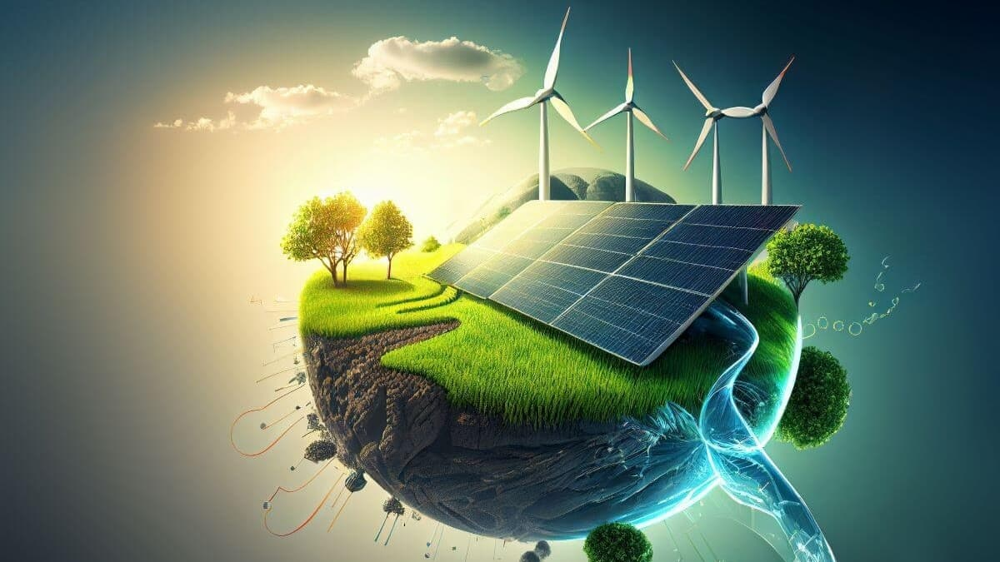

Princípios do Uso Sustentável dos Recursos Naturais
Eficiência e Conservação:
Eficiência: Utilizar recursos de maneira que maximize a produtividade e minimize desperdícios. Isso inclui técnicas como a reciclagem, a utilização de tecnologias mais eficientes e o reaproveitamento de materiais.
Conservação: Proteger e preservar recursos naturais para garantir sua disponibilidade futura. Isso pode incluir a criação de reservas naturais e a implementação de práticas de manejo sustentável.
Respeito aos Limites Naturais:
Os recursos naturais têm limites, e seu uso deve ser compatível com a capacidade de regeneração dos ecossistemas. Isso significa não explorar recursos a uma taxa maior do que a sua capacidade de renovação.
Inovação e Tecnologia:
Desenvolvimento e aplicação de tecnologias que permitam o uso mais eficiente dos recursos e a redução de impactos ambientais. Isso inclui energias renováveis, agricultura sustentável e tecnologias de baixo carbono.
Justiça Social e Econômica:
Garantir que o uso dos recursos naturais beneficie equitativamente todas as partes da sociedade, incluindo as comunidades locais e indígenas, que muitas vezes dependem diretamente desses recursos para sua subsistência.
Práticas de Uso Sustentável dos Recursos Naturais
Agricultura Sustentável:
Práticas agrícolas que conservam o solo, utilizam água de forma eficiente e minimizam o uso de produtos químicos, como a rotação de culturas, agroflorestas e agricultura orgânica.
Manejo Florestal Sustentável:
Gerenciamento das florestas de maneira que mantenha sua biodiversidade, produtividade e capacidade de regeneração. Isso inclui o corte seletivo, a replantação e a proteção contra desmatamento ilegal.
Pesca Sustentável:
Práticas de pesca que mantêm as populações de peixes a níveis sustentáveis, evitando a sobrepesca e protegendo habitats marinhos. Isso pode ser alcançado através de cotas de pesca, áreas protegidas e métodos de pesca seletiva.
Gestão da Água:
Uso eficiente e proteção dos recursos hídricos, incluindo a gestão integrada das bacias hidrográficas, a reutilização de água e a proteção das fontes de água contra poluição.
Energia Renovável:
Substituição de combustíveis fósseis por fontes de energia renováveis, como solar, eólica, hidráulica e biomassa, para reduzir a pegada de carbono e a dependência de recursos não renováveis.